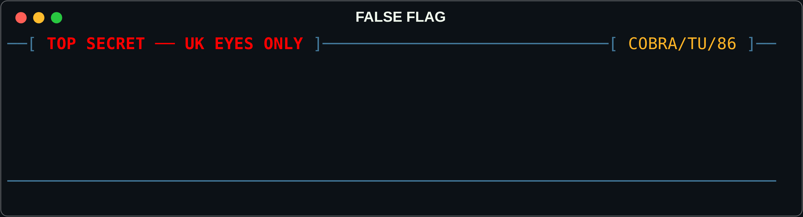
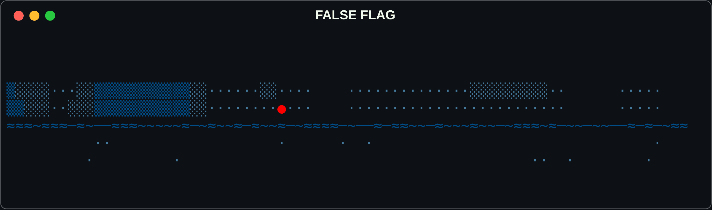
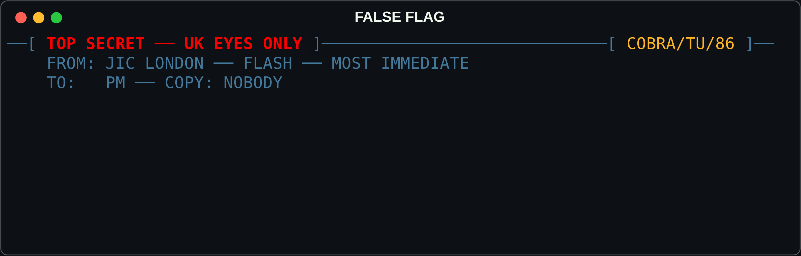
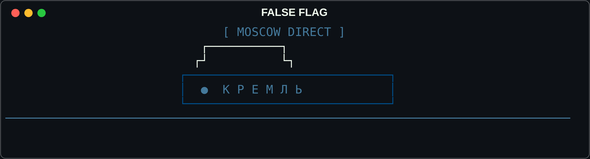
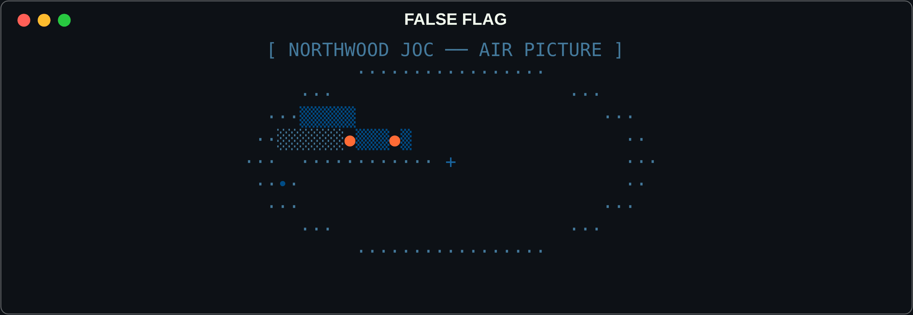

02[ THE INTERSTITIALS ]
Five vignettes that play between turns. Three to six seconds each, any key skips, and the same joke never lands twice in a row.
They exist because a crisis wargame that is unrelenting stops being frightening. The turn ends, the autosave ticks, and instead of the next briefing you get a small scene in the same visual language as everything else — block elements, box-drawing, one character, one timing, one punchline. Then the fog rolls back in and Moscow is still there.
Nothing here is a mockup. Every frame is generated at runtime by
cli/interstitials.py from a seed, so the same campaign renders
the same vignettes every time, and some of them read the world state: the tea
cups rattle harder as escalation climbs. The recordings below are the real
frame sequences, captured through a headless terminal at the choreography's
own timings.

The aide's trolley crosses under the classification strip. The cups are labelled for the room — CDS, NSA, FS, HS, AG — and the Chief of the Defence Staff's cup rattles harder the closer the crisis gets to the edge. A cup is left standing on the floor. Push escalation past eighty and the aide simply keeps walking: THE TROLLEY DID NOT STOP.

It rises out of a fog bank and sweeps left, then right — and then the lens stops, turns, and points straight at you for a beat before the crash-dive and the expanding ripples. The gag is the beat. You were being observed by the thing you were observing.

A JIC memo chatters out in the proper rhythm — burst, burst, breath, carriage return — under redaction that gets heavier with every paragraph, until the final one is a solid black bar. What survives is the header, the classification, and a tea-ring somebody left on the page.

[ MOSCOW DIRECT ] is blinking. The Downing
Street cat is already sitting on it. A shooing hand secures a relocation
of exactly two columns, and the blinking stops on the precise frame the
handset lifts. Nobody's dignity survives, and the call still connects.

The sweep goes round, contacts bloom, and one of them is closing. It resolves, at the last possible moment, into three characters of seagull and leaves the screen to the left. Somewhere a formal complaint is being drafted.
──●── [ THE SAME LANGUAGE EVERYWHERE ]
The vignettes are not a separate art style bolted on. They are drawn with the same primitives as the title sequence, the turn banners and the section dividers on this page: a seeded fog generator, classification strips, sonar traces, and a character set that never leaves box-drawing, block elements and geometric shapes. No emoji, anywhere, ever. The rule that keeps it coherent is that every surface takes a seed, and the same seed always draws the same thing — so a saved campaign replays identically, down to the fog.
The dividers above and the fog bands on this page were generated by the
game's own cli/aesthetics.py when this page was built. So was the
masthead on the front page.
The
full aesthetic reference →
Watch the language in use across seventeen turns →